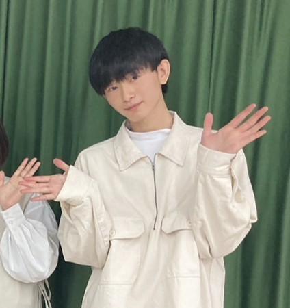

AI活用・効率化
ChatGPT・Claude・Gemini 等を活用した業務プロセスの構築と自動化

SE / BPR・AI活用推進
ITエンジニア経験と海外拠点での業務改善支援を経て、現場の効率化やAIツール活用を推進しています。
教育学部卒業。教員免許取得。
SEとして現場案件の進捗管理・Web/システム開発を担当。
タイにて社員教育・業務マニュアル整備、セブ島にてSNS運用を担当。
ChatGPT・Claude・Gemini 等を活用した業務プロセスの構築と自動化
HTML/CSSによるLP実装やUI構造化、Web基礎開発
オペレーション可視化、マニュアル整備、社内レクチャー推進
デザインをコードにしてスマホ対応させる
日常業務の手間をなくす仕組みをつくる
プロンプト設計と現場導入のノウハウを習得